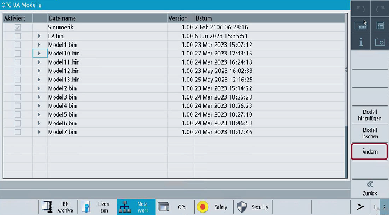

Drücken Sie den Softkey "Ändern".
Softkey "Ändern"
Die folgende Maske wird eingeblendet, in der Sie folgende Funktionen ausführen können:
Wählen Sie eine oder mehrere CSOM-Datei(en) in der Liste aus.
Aktivieren Sie eine oder mehrere CSOM-Datei(en) durch Auswählen des Kontrollkästchens.
Deaktivieren Sie eine oder mehrere CSOM-Datei(en) durch Abwählen des Kontrollkästchens.
OPC UA-Modelle auswählen
Wenn Sie den Softkey "Abbruch" drücken, werden alle Eingaben verworfen und Sie gelangen zum Dialog "OPC UA-Modelle" zurück.
Wenn Sie den Softkey "OK" drücken, werden die Änderungen übernommen.
Die Bedingungen zum Aktivieren der CSOM-Dateien sind in der folgenden Tabelle beschrieben:
Bedingung | Beschreibung |
|---|---|
Aktivieren mehrerer CSOM-Dateien mit demselben Namespace | Das Aktivieren mehrerer binärer Dateien ist für CSOM-Dateien, die denselben Namespace-URI haben, nicht möglich. Ein Popup zeigt die Meldung an: Ausgewählte Modelldatei enthält den gleichen Namespace-URI wie in <Dateiname.bin>. Wenn Sie auf "OK" klicken, wird die aktuell aktivierte Datei deaktiviert. |
Namespace-Anzahl erreicht | Die maximale Anzahl von Namespaces, die aktiviert werden können, darf 12 nicht überschreiten. |
Max. binäre Dateien, die aktiviert werden können | Die maximale Anzahl von CSOM-Dateien, die aktiviert werden können, ist 10. |
Max. binäre Dateien, die geladen werden können | Die maximale Anzahl von CSOM-Dateien, die geladen werden können, ist 25. |
Aktivieren mit Namespace-URI | Bei den neuen Installationen von OPC UA Server Version 4.1 sind nur Zugriffsrechte mit Namespace-URI zulässig. |
| Hinweis |
Namespaces können wie unten erläutert angezeigt werden:
|
Wenn eine binäre Datei, die in einer OPC UA-Version <= 4.0 erstellt wurde, in OPC UA-Version 4.1 geladen wird, zeigt sie das folgende Verhalten:
Die Namespace-Indexierung funktioniert nur, wenn eine CSOM-Datei aktiviert ist. Der Benutzer kann die Rechte CsomReadx und CsomWritex anwenden, wobei "x" für die Indexnummer des Namespace (3-12) steht.
Die Zugriffsrechte wechseln von Namespace-Index zu Namespace-URI, wenn einer der folgenden Vorgänge ausgeführt wird:
Wenn Sie das Zugriffsrecht entfernen, indem Sie die Methode DeleteUserAccess aufrufen, dann werden die Zugriffsrechte CsomReadx und CsomWritex entfernt.
Wenn Sie zwei oder mehr CSOM-Dateien aktivieren, werden die vorhandenen Rechte CsomReadx und CsomWritex gelöscht. Nach dem Neustart des Servers können Zugriffsrechte nur mit Namespace-URI gewährt/gelöscht werden.